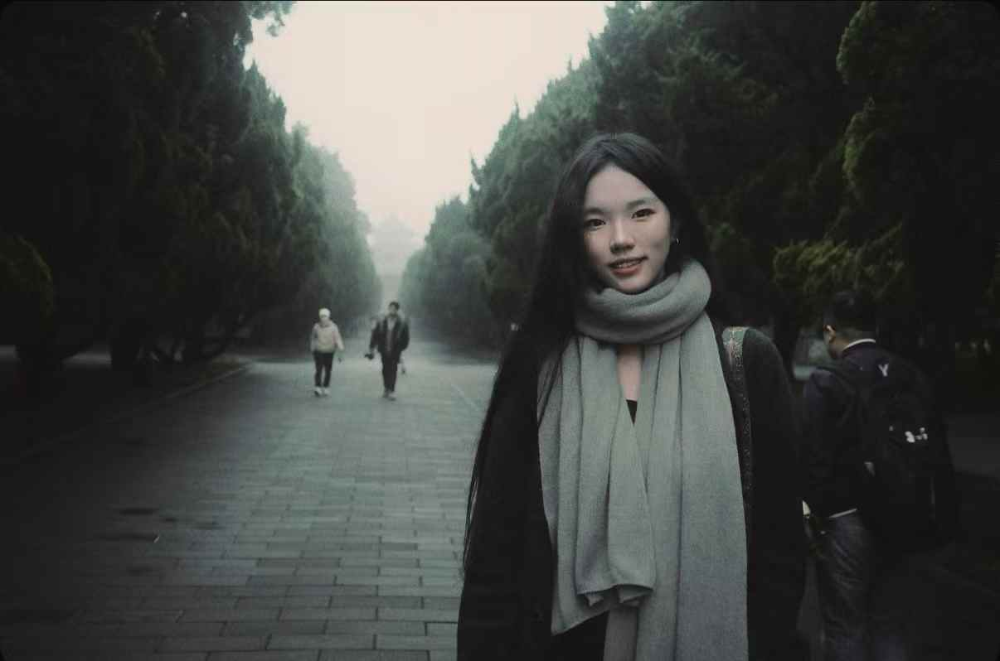

我出生并成长于上海，来自一个传统的福建家庭。
家庭中的信仰实践、代际关系与沉默的情感结构，构成了我最早的叙事经验，也深刻影响了我对时间、记忆与责任的理解。
在成长过程中，我长期在不同地域之间游走：福建、香港、清迈以及中国东北。这些地方在宗教氛围、生活节奏与人际结构上的巨大差异，让我意识到"现实"并非单一系统，而是由多种秩序并置而成。在福建与清迈，我曾近距离接触佛教与民间信仰体系，见过多位高僧与修行者，他们的生活方式与时间观念，改变了我对"行动""等待"与"意义"的理解。
我接受过国际化教育，目前在纽约Parsons学习设计与影像相关方向，专注于跨媒介创作实践。我的学习与创作横跨电影制作、数字设计与互动系统，既关注叙事与影像语言，也重视技术作为表达结构本身的意义。
在过往项目中，我曾参与并主导多项以真实人物与现实场域为核心的创作，包括纪录片拍摄、实验影像与交互作品。这些作品常从家庭、地方文化与个体经验出发，尝试在私密叙事与结构性系统之间建立连接，而非将个人经验简化为情绪表达。
我目前的努力方向，是在影像与技术之间建立一种长期而稳定的创作路径：既能保持对现实世界的敏感与尊重，也能通过媒介实验回应更大的问题——关于时间如何被感知，系统如何塑造命运，以及个体如何在其中留下痕迹。
I was born and raised in Shanghai, from a traditional Fujian family.
The religious practice, intergenerational ties, and silent emotional structure at home formed my earliest narrative experience and deeply shaped my understanding of time, memory, and responsibility.
Growing up, I moved often between places: Fujian, Hong Kong, Chiang Mai, and Northeast China. The sharp contrasts in religious atmosphere, pace of life, and social structure made me see that "reality" is not one system but many orders existing side by side. In Fujian and Chiang Mai I came close to Buddhist and folk belief systems and met monks and practitioners; their way of life and sense of time changed how I understand "action," "waiting," and "meaning."
I have had an international education and now study design and image-related fields at Parsons in New York, focusing on cross-media practice. My work spans filmmaking, digital design, and interactive systems—both narrative and image, and the role of technology as a structure of expression.
In past projects I have led and contributed to work centered on real people and real places: documentary film, experimental video, and interactive pieces. These often start from family, local culture, and personal experience, trying to connect intimate narrative with structural systems rather than reducing the personal to mood or sentiment.
What I am working toward now is a sustained path between image and technology: staying sensitive and respectful to the real world while using media experiments to engage larger questions—how time is felt, how systems shape fate, and how individuals leave a mark within them.